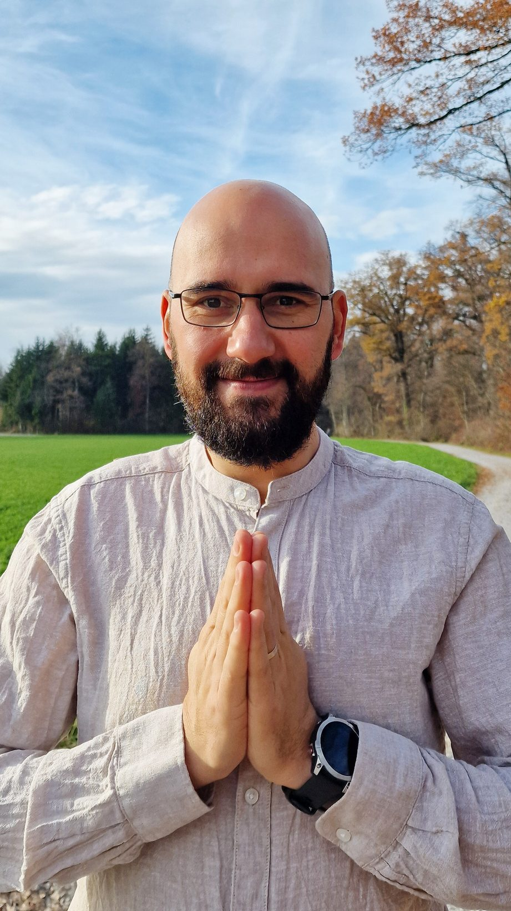

Un spațiu liniștit și așezat
Țin spațiu pentru descoperire, eliberare și devenire

Bun venit
El este Flavius.
Am creat The Becoming Field ca un spațiu liniștit și așezat, în care transformarea se petrece blând.
Aici ești întâmpinat așa cum ești, ținut cu grijă și ai loc să descoperi și să explorezi.
Fie că porți neliniște, conflict interior sau pur și simplu un dor de aliniere, nu trebuie să forțezi.
Ești întâmpinat — și devenirea se întâmplă.

Abordarea
Cum putem lucra împreună
Ceea ce ofer este experiențial, întrupat și relațional. Se întâmplă prin experiență directă, nu prin concepte sau tehnici de aplicat mai târziu.
Integrează liniștea, conștientizarea și susținerea energetică subtilă, ca să te întâmpine exact acolo unde ești. Răspunde la ceea ce e viu în momentul prezent și lasă înțelegerea și eliberarea să apară firesc, în ritmul tău.
Ce ofer
Două căi de intrare.
Soul Recharge
Sesiuni individuale de Reiki în care lucrăm cu prezență, energie și ascultare profundă. Sesiunile sunt ghidate de ceea ce e viu în moment, nu de un protocol fix.
Cercul Becoming
Spații mici de grup, unde o călătorie inspirată din meditație și lucrul cu părțile interioare se întâlnește cu Reiki. Câmpul grupului lasă să apară ceva unic — o ținere împărtășită care adâncește devenirea, individuală și colectivă.
Un prim pas simplu
Curios unde îți merge energia?
Energy Audit este un exercițiu gratuit de auto-explorare, de cincisprezece minute, care îți arată unde îți pierzi energia în patru zone ale vieții — și unde așteaptă, în liniște, să se întoarcă la tine.
Nu trebuie să fii pregătit. Nu trebuie să știi ce cauți.
Dacă ceva în tine e atras de liniște, sinceritate și descoperire blândă, ești binevenit aici.
Acesta este The Becoming Field